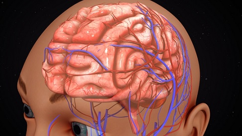

12 de Abril de 2018 Diplomado en Educacion Superior por Maria Kuno
La percepción y la memoria pueden estar distribuidas a través del sistema nervioso en la "persona" de estos "demonios cognoscitivos" de proposito especial. Las columnas en el sistema visual reaccionan a la orientación y al predominio ocular.
Continuar... | Commentarios (5)